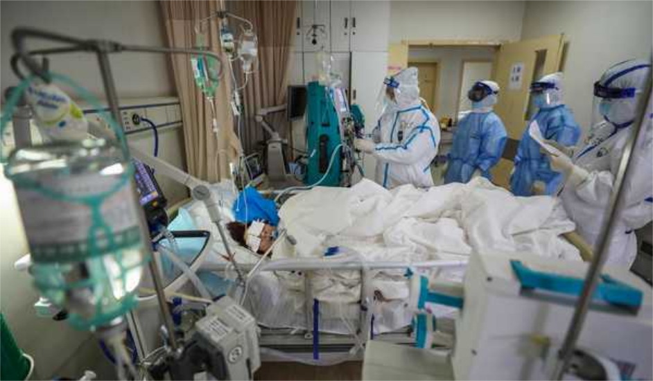

TIDAK perlu panik. Tak perlu pula dipusingkan istilah self distancing, self isolation, self quarantine, atau bahkan lockdown. Karena, kalau mengikuti istilah, ada banyak lagi sebutan. Yang jelas, ini upaya kita bersama untuk mencegah penyebaran lebih luas wabah virus corona (Covid-19).
WHO menyarankan langkah perlindungan dasar terhadap virus corona. Langkah pertama yang disarankan bukan menggunakan masker, tetapi mencuci tangan sesering mungkin. Langkah ini disarankan karena mencuci tangan secara teratur dan menyeluruh akan membunuh virus yang mungkin ada di tangan.
Bedanya, istilah isolasi biasanya dipakai untuk mereka yang diyakini dapat terpapar alias berisiko terpapar virus, sementara karantina adalah untuk mereka yang diyakini telah terpapar meski belum memperlihatkan gejala sakit.
Adapun lockdown merupakan upaya untuk membatasi interaksi satu komunitas dengan komunitas lain. Misal, interaksi warga daerah dengan banyak kasus positif infeksi corona dengan warga dari daerah lain.
Saat lockdown diterapkan—terutama dalam kaitannya dengan wabah—, arus keluar dan masuk kawasan dibatasi. Hanya kebutuhan darurat dan atau medis yang biasanya masih diizinkan dalam konteks ini.
Prinsipnya, istilah-istilah itu adalah cara untuk meminimalkan kontak yang terlalu dekat yang memungkinkan kita saling terpapar cipratan cairan sistem pernapasan orang lain.
Mengapa? Apa pula kaitannya dengan wabah virus corona? Virus penyebab wabah ini, 2019-nCoV, menyebar hanya melalui cipratan (droplet) cairan pernapasan tersebut. Bukan lewat udara.
Tantangannya, saat kita bicara saja, kadang-kadang tak sengaja ada ludah yang nyiprat, bukan?
Ludah memang bukan bagian dari sistem pernapasan, tetapi sangat dekat dengan sistem pernapasan bahkan "bertemu" di pangkal mulut.
Jadi, risiko ada virus corona di dalam air ludah pun sama besarnya dengan dahak dan ingus.
Bahkan cipratan cairan pernapasan yang menempel di permukaan barang, bisa menempel di tangan atau anggota badan orang lain.
Semakin menjadi masalah ketika orang lain itu lalu mengusap mulut, hidung, dan atau mata menggunakan tangan atau anggota badan yang terpapar cairan tersebut.
Self distancing, sel isolation, self quarantine, dan atau lockdown. Putus atau minimalkan jalur penularan, dengan meminimalkan ruang sebar bagi cipratan cairan pernapasan. Pakai masker buat yang sedang tak enak badan, apalagi pernah kontak dengan pasien positif terinfeksi corona. Bagi yang sehat, masker bisa membantu di lingkungan yang tak bisa dipastikan kesterilannya, sembari pastikan juga kebersihan masker. Sejumlah kebijakan pemerintah saat ini, termasuk meliburkan sekolah dan menyarankan pekerja untuk bekerja dari rumah, merupakan langkah social distancing—skala lebih luas dari self distancing—sebagai upaya bersama mencegah penularan virus corona.
Sumber: https://jeo.kompas.com/mengapa-isolasi-dan-karantina-penting-untuk-cegah-penyebaran-corona